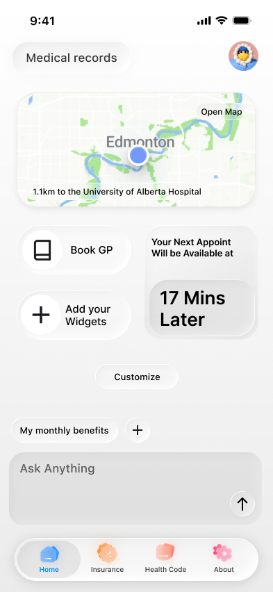
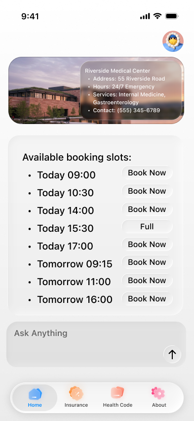
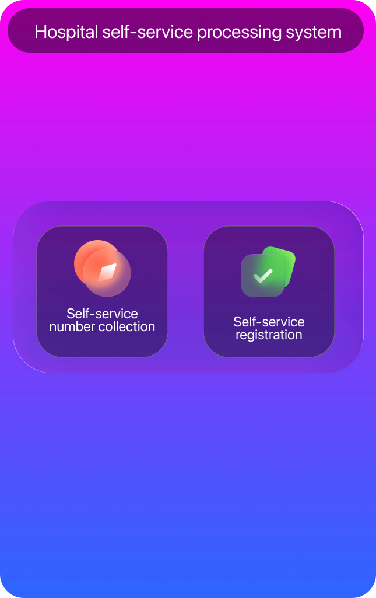

One System,
One Journey.
An omni-channel healthcare concept connecting mobile and kiosk touchpoints.
I created the Figma interface design for this academic team project. Research and other project work were shared with teammates.


Figma interface design across the concept’s mobile and kiosk touchpoints.
Rounded surfaces, soft panels, colourful icon accents and recurring mobile navigation.
Academic collaboration with Junhao Xu and Sitan Ding; research and other deliverables were shared.

One journey needs
one visual language.
Connect the touchpoints.
Expressive icons connect mobile and kiosk, while differences in surface and colour treatment show where the system can become more consistent.
Carry the feedback forward.
The final assessment recognised promising mobile/tablet interfaces and a refined poster style. It also called for stronger hierarchy, kiosk consistency and accessibility justification.
Develop the next iteration.
Carry the assessment feedback into clearer hierarchy, a more coherent kiosk and explicit accessibility decisions.